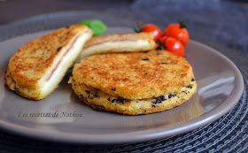

Pain perdu tapenade mozzarella
Ingrédients
4×
- 8 tranches de pain
- 1 oeuf
- 1 pot de tapenade noire
- 10 cl de lait
- 4 tranches de jambon de Parme
- 1 boule de mozzarella
- beurre

Préparation
Étape 1
Retirer la croûte de 8 tranches de pain (ou pain de mie).
Étape 2
Mélanger 1 oeuf avec 1 pot de tapenade noire, puis ajouter 10 cl de lait.
Étape 3
Garnir 4 tranches de pain de 4 tranches de jambon de Parme (facultatif) et de 1 boule de mozzarella en tranches. Refermer avec les autres tranches.
Étape 4
Tremper les sandwichs dans la préparation, puis les dorer à la poêle dans du beurre.
Résumé
8 tranches de pain
1 oeuf
1 pot de tapenade noire
10 cl de lait
Mélanger
4 tranches de jambon de Parme
1 boule de mozzarella
Garnir
beurre
Tremper dorer